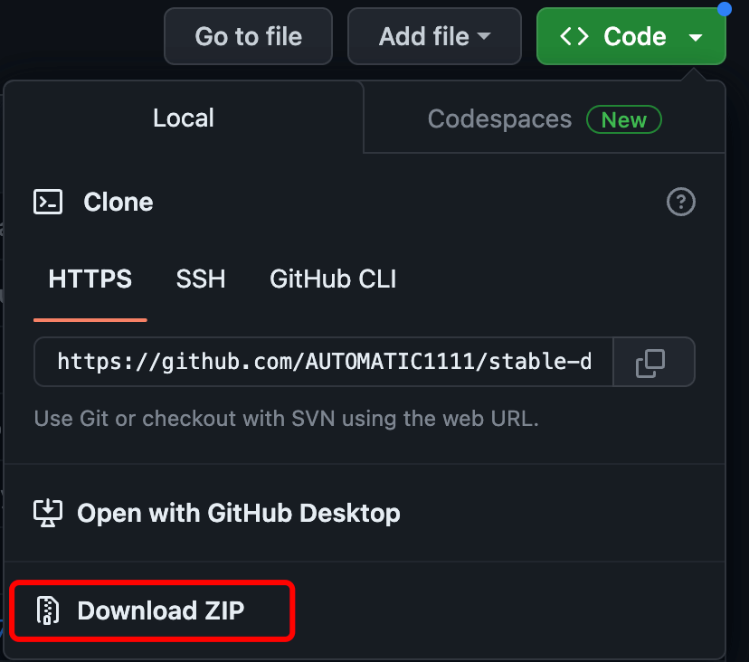
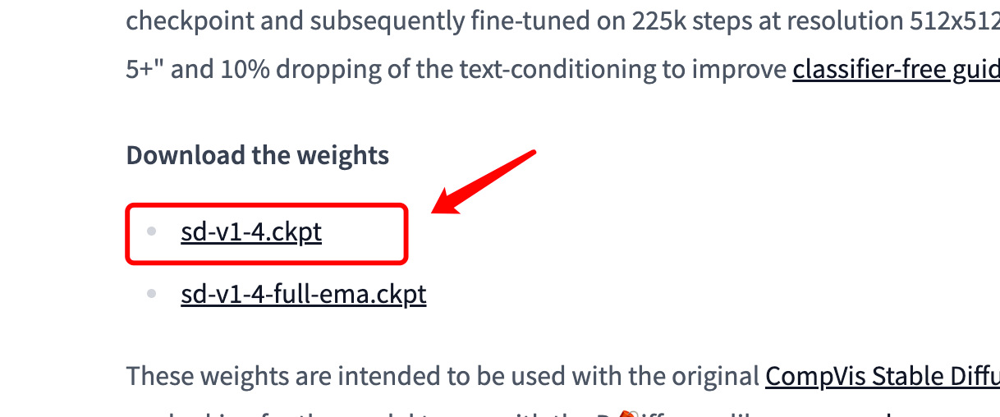
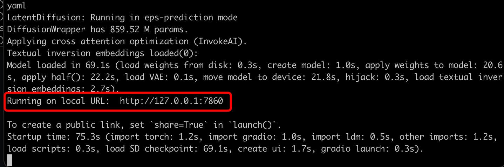
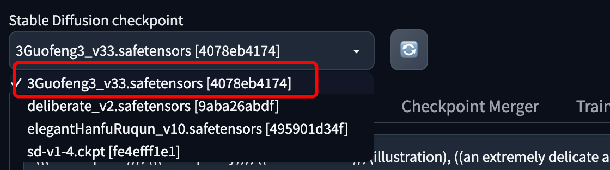

Python AI 画像生成
この記事では、いくつかの開発 API やオープンソースのライブラリを利用して、自分専用の AI 画像作成ツールを構築する方法を紹介します。
テキストから画像を生成する API による
テキストから画像を生成する API を使用すると、テキストの説明に基づいて、まったく新しいオリジナル画像を作成できます。
阿里云百炼は、次の2つのシリーズのモデルを提供しています：
- 通義千問（Qwen-Image）：複雑な中国語・英語テキストのレンダリングが得意です。この章ではこれを例にします。
- 通义万相（Wan シリーズ）：写実的な画像や写真レベルの視覚効果を生成するために使用されます。
次のコマンドを実行して、DashScope Python SDK をインストールします：
# 如果运行失败，您可以将pip替换成pip3再运行 pip install -U requests dashscope
阿里云百炼のモデルサービスを有効化し、API-KEY を取得する必要があります。
まず阿里云のメインアカウントを使用して、百炼モデルサービスプラットフォームにアクセスできます：https://bailian.console.aliyun.com/その後、右上隅の「ログイン」をクリックし、ログインが成功したら、右上隅の歯車⚙️アイコンをクリックして、API key を選択し、API key をコピーします。ない場合は API key を作成することもできます。


阿里云百炼の有効化には費用はかかりません。モデル呼び出し（無料枠を超えた場合）、モデルのデプロイ、モデルのチューニングにのみ対応する費用が発生します。
現在、API を使用するには token 単位で課金されます。幸い、それほど高くないので、まず最も安いパッケージを購入できます：阿里云百炼大規模モデルサービスプラットフォーム。
次に、プロンプトを設定して画像を生成します：
例
from urllib.parse import urlparse, unquote
from pathlib import PurePosixPath
import requests
from dashscope import ImageSynthesis
import os
prompt = 典雅で荘厳な対聯が広間の中央に掛けられている。部屋は静かで古典のな中国風のしつらえで、机の上には青磁がいくつか置かれている。対聯の左側には「義本生知人機同道善思新」と書かれ、右側には「通雲賦智乾坤啓数高志遠」と書かれ、横批には「智啓通義」と書かれている。字体は流麗で、中央には中国風の絵画が掛かっており、その内容は岳陽楼である。
# 请用百炼API Key
api_key = "sk-xxx"
print('----同步调用，请等待任务执行----')
rsp = ImageSynthesis.call(api_key=api_key,
model="qwen-image",
prompt=prompt,
n=1,
size='1328*1328',
prompt_extend=True,
watermark=True)
print('response: %s' % rsp)
if rsp.status_code == HTTPStatus.OK:
# カレントディレクトリに画像を保存する
for result in rsp.output.results:
file_name = PurePosixPath(unquote(urlparse(result.url).path)).parts[-1]
with open('./%s' % file_name, 'wb+') as f:
f.write(requests.get(result.url).content)
else:
print('同步调用失败, status_code: %s, code: %s, message: %s' %
(rsp.status_code, rsp.code, rsp.message))
出力結果は以下のようになります。url パラメータがあるので、それにアクセスするとプロンプトで記述された画像をダウンロードできます。
----同步调用，请等待任务执行----
response: {"status_code": 200, "request_id": "1968746e-f434-4f77-9f8c-9b1adb80e8d7", "code": null, "message": "", "output": {"task_id": "d85c65d9-c4ff-4d66-a895-7c7746620b0c", "task_status": "SUCCEEDED", "results": [{"url": "https://dashscope-result-sh.oss-cn-shanghai.aliyuncs.com/7d/05/20250916/8d68e658/d85c65d9-c4ff-4d66-a895-7c7746620b0c-1.png?xxxxxxxxx",
...
上記の例で生成された画像は次のとおりです。

詳細は公式ドキュメントを参照してください：https://help.aliyun.com/zh/model-studio/text-to-image
Stable Diffusion
使用する必要があるオープンソースライブラリは Stable Diffusion web UI です。これは Gradio ライブラリに基づく Stable Diffusion のブラウザインターフェースです。
Stable Diffusion web UI の GitHub アドレス：https://github.com/AUTOMATIC1111/stable-diffusion-webui
Stable Diffusion を実行するには、ハードウェアの要件が比較的高く、実行時に大きなリソース、特にグラフィックスカードを消費します。
Windows 環境へのインストール
ローカル環境には Python 3.10.6 以降のインストールが必要で、それを本機の環境変数に追加します。
Stable Diffusion web UI の GitHub ソースコードをダウンロードしますhttps://github.com/AUTOMATIC1111/stable-diffusion-webui。
git clone https://github.com/AUTOMATIC1111/stable-diffusion-webui.git
Git をインストールしていない場合は、右上隅から zip 圧縮パッケージをダウンロードできます。

stable-diffusion-webui を解凍し、stable-diffusion-webui ディレクトリに入ります。
次にモデルをダウンロードする必要があります。ダウンロード先：https://huggingface.co/CompVis/stable-diffusion-v-1-4-original

ダウンロードしたモデルをstable-diffusion-webui/models/Stable-diffusionディレクトリ配下に。
stable-diffusion-webui ディレクトリに入ります：
Windows では管理者以外で実行：
webui-user.bat
Linux および Mac OS 環境では次のコマンドを実行します：
./webui.sh
次に、プログラムは自動的にインストールおよび起動します。起動に成功すると、アクセス可能な URL アドレスが表示されます。http://127.0.0.1:7860：

アクセスするとhttp://127.0.0.1:7860、画面は以下のようになります。

注意：インストールが止まって動かない場合は、おそらく Github ソースコードのダウンロードに問題があります。Github のミラーを使用して解決できます。現在のところ非常に安定したミラーはまだないので、Google で検索することをお勧めします。https://hub.fgit.mlstable-diffusion-webui ディレクトリの launch.py ファイルを開き、以下の部分のコードの Github アドレスを置き換えます（コードはおおよそ 230〜240 行の間です）：

Civitai の紹介
Civitai にはカスタマイズされたモデルが多数あり、無料でダウンロードできます。ここでは国风3というモデルをテストに使用します。ダウンロード先：https://civitai.com/models/10415/3-guofeng3?modelVersionId=36644

ダウンロードが完了したら、モデルをstable-diffusion-webui/models/Stable-diffusionディレクトリ配下に移動し、stable-diffusion-webui を再起動します：
./webui.sh
これでモデルリストから国风3モデルを選択できます：

選択後、モデル紹介ページでプロンプトやテストパラメータをコピーできます：


高速に生成するために、高さと幅を半分にしました。その後、「生成」ボタンをクリックするだけです：

生成の全過程は、WeChat 公式動画アカウントをフォローしてご覧いただけます：
その他の拡張機能